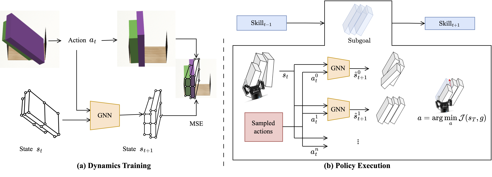

Stowing, the task of placing objects in cluttered shelves or bins, is a common task in warehouse and manufacturing operations. However, this task is still predominantly carried out by human workers as stowing is challenging to automate due to the complex multi-object interactions and long-horizon nature of the task. Previous works typically involve extensive data collection and costly human labeling of semantic priors across diverse object categories. This paper presents a method to learn a generalizable robot stowing policy from predictive model of object interactions and a single demonstration with behavior primitives. We propose a novel framework that utilizes Graph Neural Networks to predict object interactions within the parameter space of behavioral primitives. We further employ primitive-augmented trajectory optimization to search the parameters of a predefined library of heterogeneous behavioral primitives to instantiate the control action. Our framework enables robots to proficiently execute long-horizon stowing tasks with a few keyframes (3-4) from a single demonstration. Despite being solely trained in a simulation, our framework demonstrates remarkable generalization capabilities. It efficiently adapts to a broad spectrum of real-world conditions, including various shelf widths, fluctuating quantities of objects, and objects with diverse attributes such as sizes and shapes.
Nominal setup
With heavy and trapezoid objects
With tiny object
With tiny object 2
With bottle to be grasped
With slippery roller
Small shelf setup
With deformable objects

Overview of the proposed framework. (a) A particle-based representation characterizes the object state. The object state's predicted outcome following the executed robot actions is computed alongside the ground truth object state using the MSE loss function to train the GNN. (b) For each skill, we apply random shooting to sample parameters within the action parameter space, utilizing the GNN to predict object movement. We then select the action that brings us closest to the desired state. Each skill is executed in sequence.
@inproceedings{chen2023predicting,
title={{Predicting Object Interactions with Behavior Primitives: An Application in Stowing Tasks}},
author={Chen, Haonan and Niu, Yilong and Hong, Kaiwen and Liu, Shuijing and Wang, Yixuan and Li, Yunzhu and Driggs-Campbell, Katherine Rose},
booktitle={Proceedings of The 7th Conference on Robot Learning},
pages={358--373},
year={2023},
editor={Tan, Jie and Toussaint, Marc and Darvish, Kourosh},
volume={229},
series={Proceedings of Machine Learning Research},
month={06--09 Nov},
publisher={PMLR},
pdf={https://proceedings.mlr.press/v229/chen23a/chen23a.pdf},
url={https://proceedings.mlr.press/v229/chen23a.html}
}